Kijken en luisteren
Twee wetenschappers per vraag. Vanaf begin november 2026 ongeveer drie afleveringen per week.
Waar vind je de afleveringen?
Video’s van ongeveer 10 minuten op VRT MAX en YouTube, ook als podcast.
Publicatieschema
Geplande data van de 23 afleveringen, met sprekers en materiaal.
november 2026
Star Wars heeft jouw leven veranderd (ook als je het niet kent)!
Met Stijn Joye en Stef Aupers
Boek: Hoe heeft Star Wars de hele filmindustrie veranderd?


Extreme sportprestaties: het nieuwe statussymbool
Met Jeroen Scheerder en Ignace Glorieux
Boek: Dit jaar een triatlon lopen om erbij te horen?

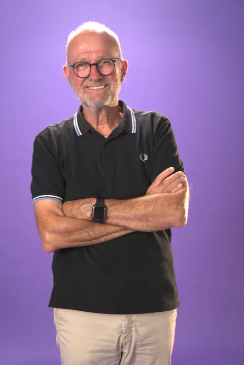
Wie volgt Trump op?
Met Peter Van Aelst en Bart Kerremans
Boek: Wie wordt de opvolger van Trump?


Deze discussie van 100 jaar geleden heeft de wereld veranderd
Met Jan Danckaert en Vincent Ginis
Boek: Waarom komen Nobelprijswinnaars in oktober graag naar Brussel?

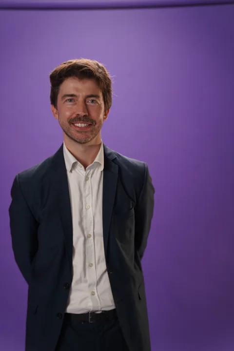
Waarom maken de nieuwe regels voor e-steps het niet veiliger?
Met Evelien Polders en Renaat Coopman
Boek: Eindelijk verkeersregels voor e-steps, maar toch niet veiliger?

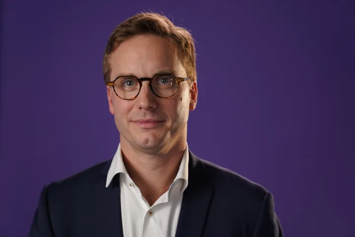
Genezen van diabetes?
Met Chantal Mathieu en Luk Buyse
Boek: Geen spuitjes meer voor mensen met diabetes?

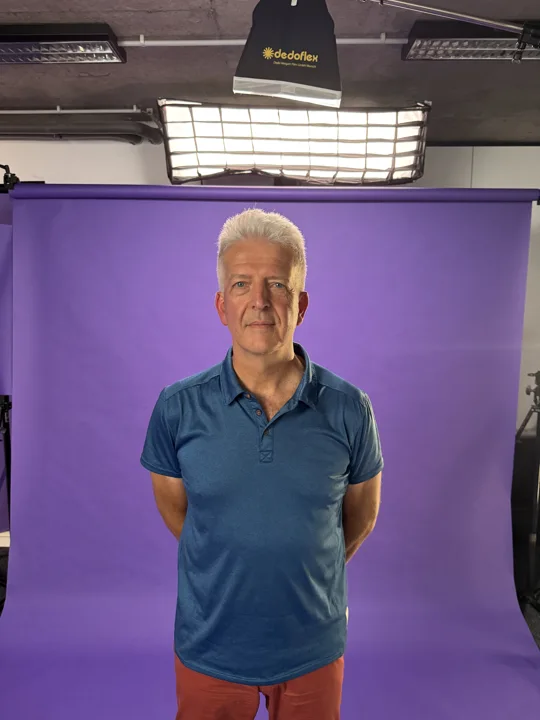
Waarom hebben we nog een monarchie nodig?
Met Luc Duerloo en Jan Theunis
Boek: Hoe gewoon mag onze toekomstige koningin Elisabeth zijn?

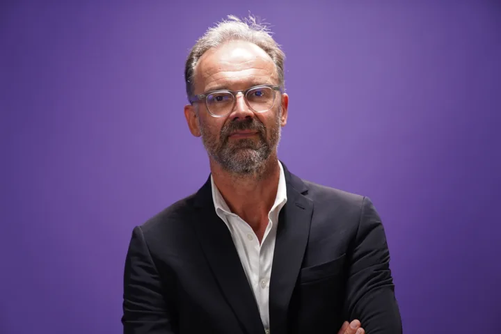
Heeft school nog zin nu AI bestaat?
Met Ruben Verborgh en Ike Picone
Boek: Nog meer internet-brol door (stiekeme) advertenties op ChatGPT?

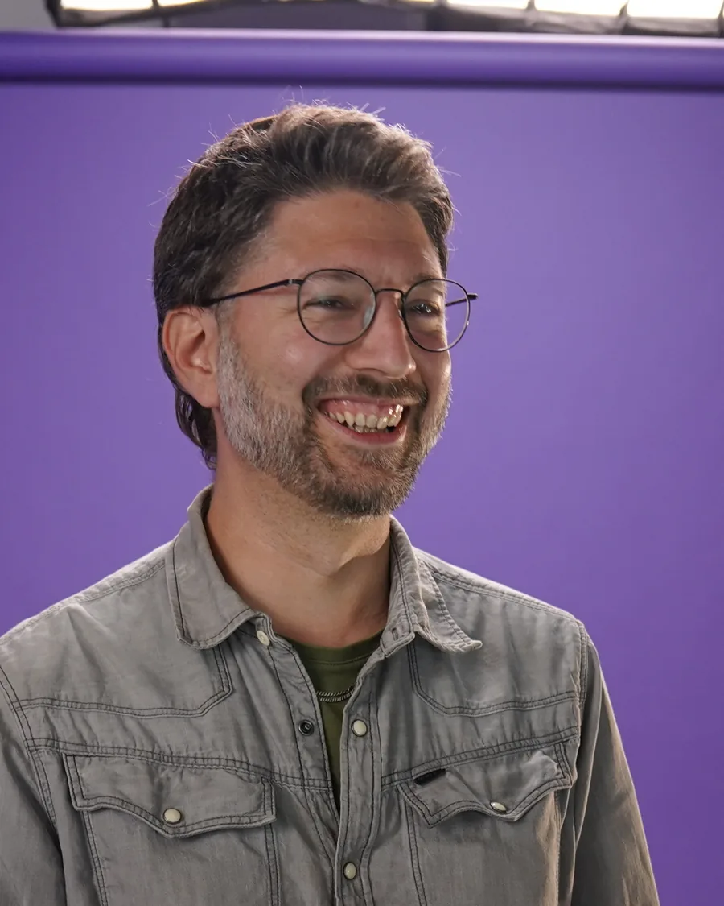
Komt er volgend jaar nog water uit je kraan?
Met Ann Van Griensven en Tim Soens
Boek: Komt er in 2027 nog drinkbaar water uit de kraan?

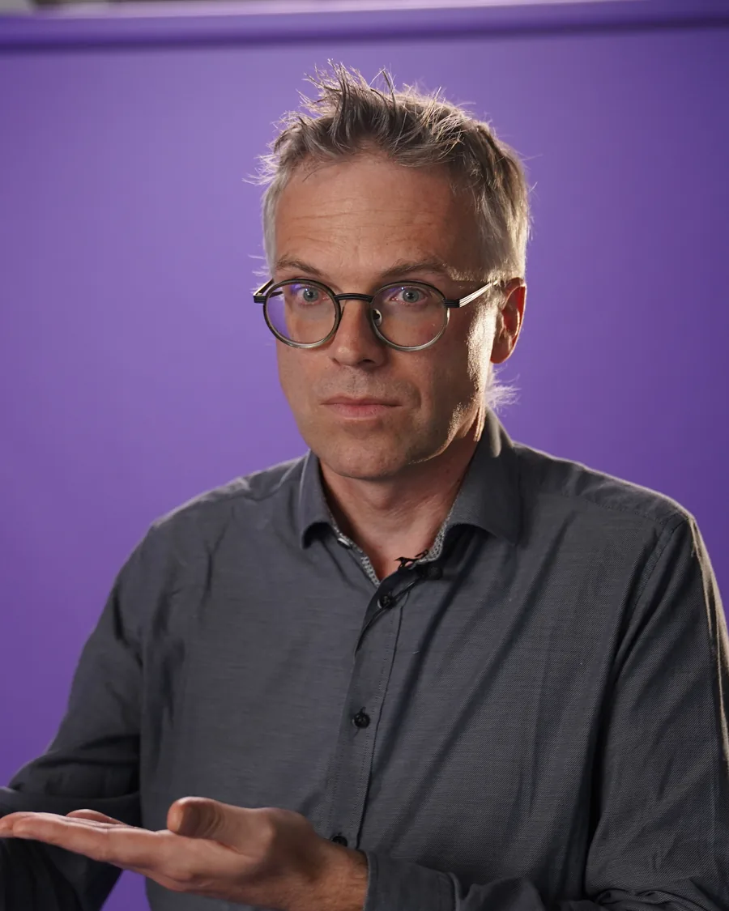
De fabriek van de toekomst
Met Annemie Bogaerts en Bart Vermang
Boek: Een stap vooruit: Birkenstocks gemaakt met elektriciteit, niet meer met gas?

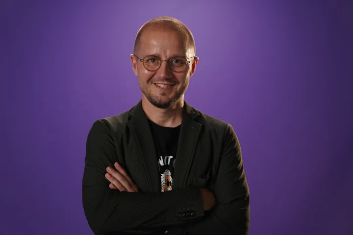
Beslist een app hoeveel je betaalt bij de dokter?
Met Brahim Zarouali en Roel Gevaers
Boek: Nog maar één app op je smartphone?

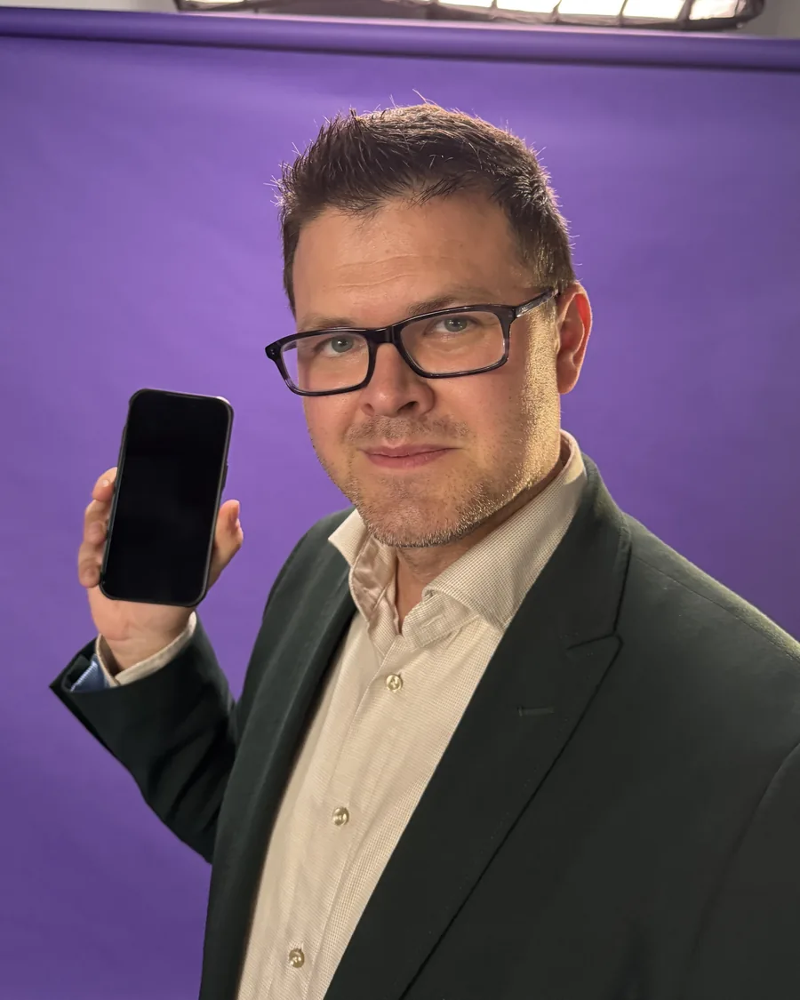
Kan de NAVO Rusland aan?
Met Alexander Mattelaer en Marijn Hoijtink
Boek: Kan de NAVO Rusland aan?

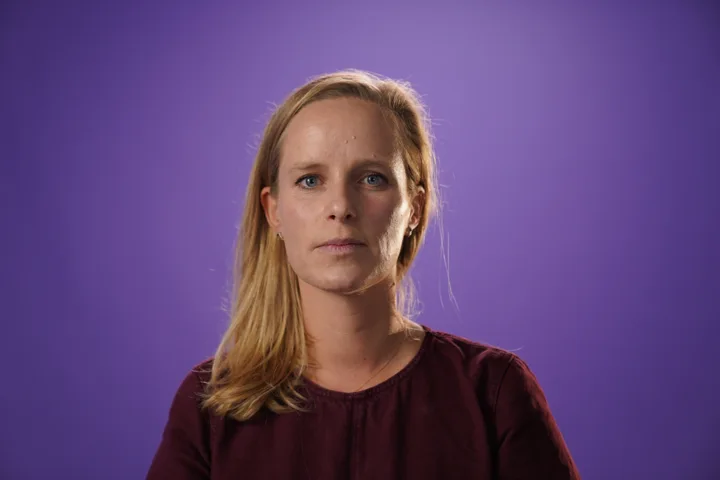
december 2026
Hoe lang houdt een mens een vliegreis vol?
Met Jelle Habay en Britt Weyts
Boek: Kan een mens een non-stop vlucht van 22 uur aan?

Wie bepaalt straks wat er wel en niet mag in de ruimte?
Met Jaroslav Hruby en Jan Wouters
Boek: Wat neemt Rafaël Liégeois mee naar het ISS?

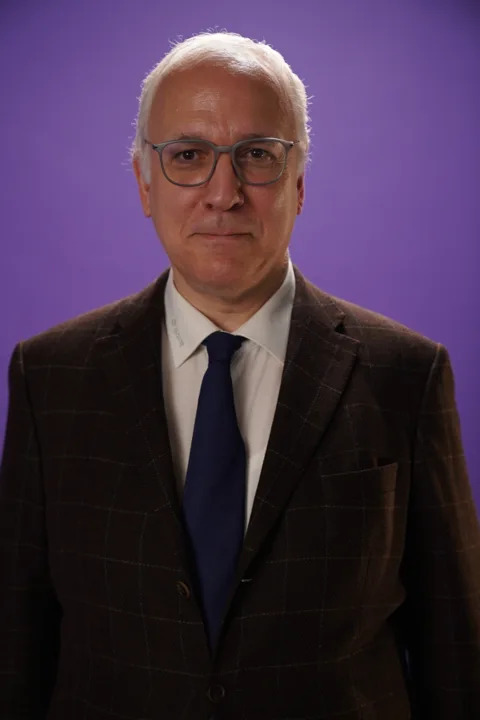
Homoseksualiteit wegknippen uit ons DNA?
Met Piet Hoebeke en Wim Pinxten
Boek: Homoseksualiteit wegknippen uit je DNA?

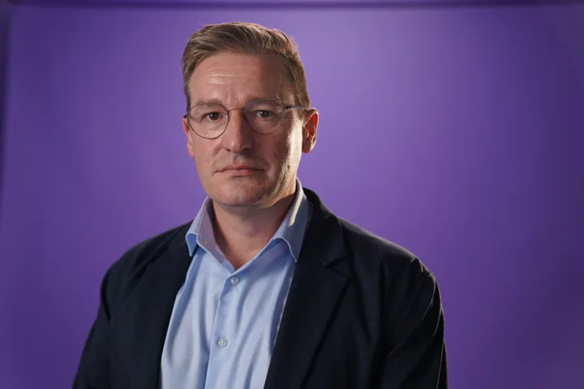
Passeert er binnenkort een wolf in jouw tuin?
Met Raoul Van Damme en Hendrik Schoukens
Boek: Passeert er binnenkort een wolf in jouw stadstuin?

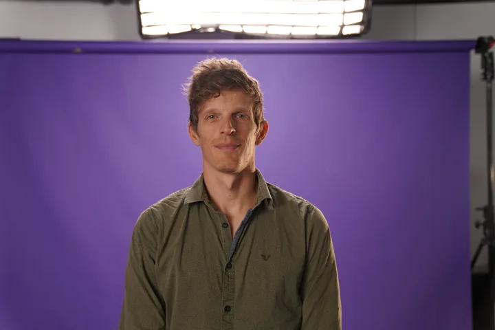
Vind je je lief nog wel op Tinder? Of vind je je lief weer op café?
Met Laura Sels en Laura Vandenbosch
Boek: Geraak je alleen nog via Tinder aan een lief?

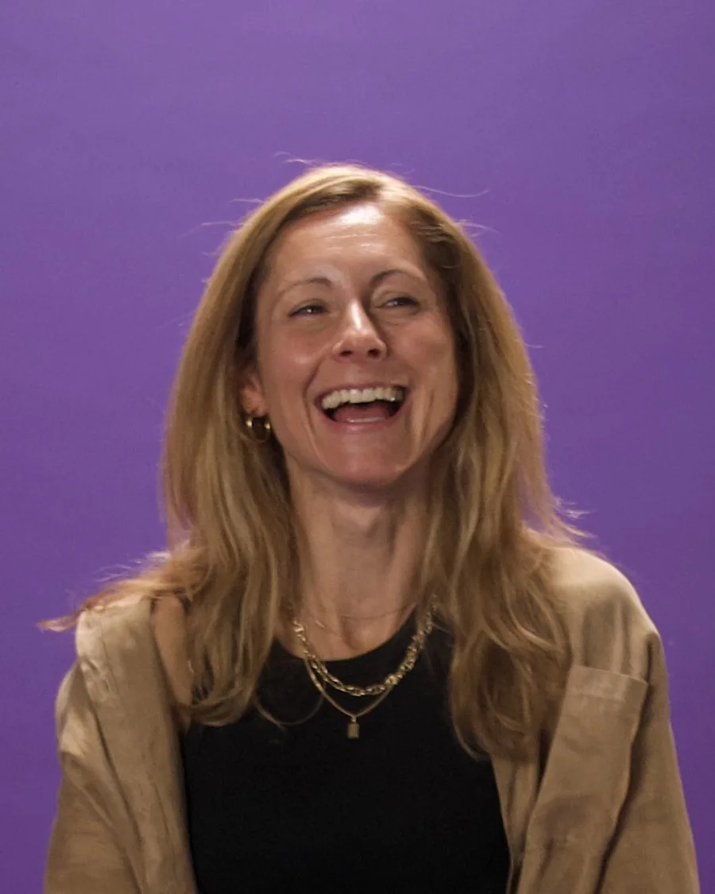
Waarom je geen kinderen uit het buitenland meer kan adopteren
Met Chiara Candaele en Heidi Mertes
Boek: In 2027 geen adoptiekinderen meer uit het buitenland?

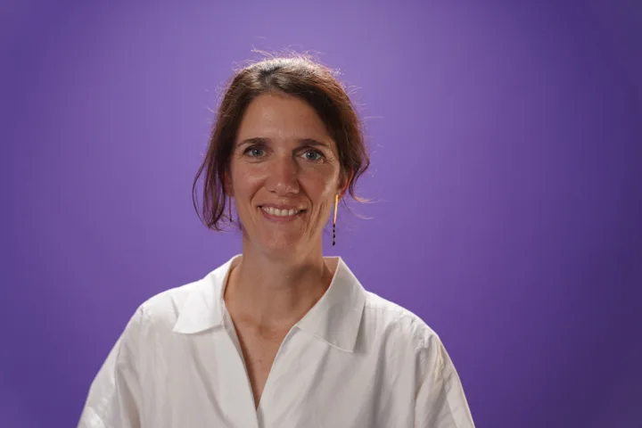
Kan je in kaka zien of je autisme hebt?
Met Werend Boesmans en Lukas Van Oudenhove
Boek: Vanaf nu ziektes opsporen met stoelgangtesten in plaats van bloedtesten?

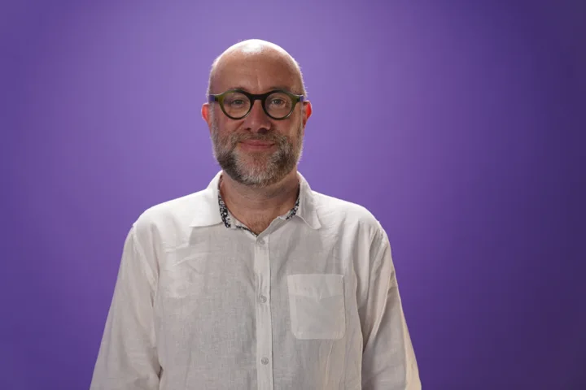
Zo besef je wanneer je niet meer goed hoort
Met Hannah Keppler en Laure Jacquemin
Boek: Zullen mensen hun hoorapparaat in 2027 écht graag dragen?

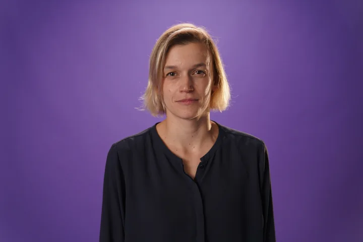
Wordt een spuitje botox net zo normaal als naar de kapper gaan?
Met Giselinde Kuipers en Philip Blondeel
Boek: Wordt een botox-afspraak dit jaar even normaal als een tandartscontrole?

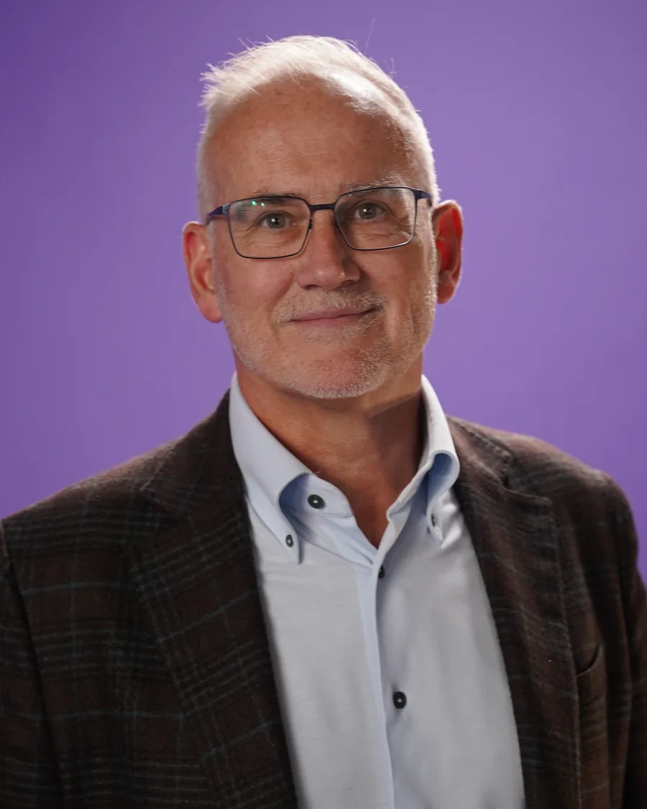
Maken algoritmes onze levens saaier?
Met Annelien Smets en Len Feremans
Boek: Verleren we in 2027 om toevalligheden op te merken?

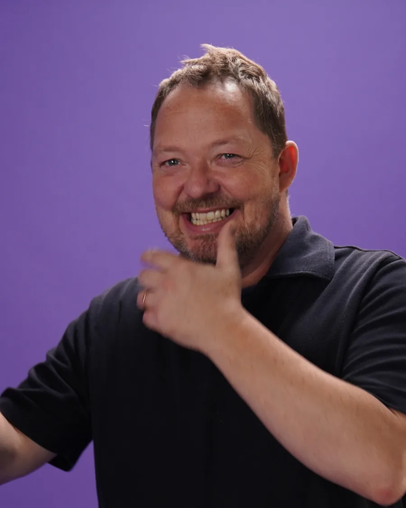
Langer en gezonder leven in Limburg?
Met Bert Op ’t Eijnde en Tim De Meyer
Boek: Langer en gezonder leven in Limburg?

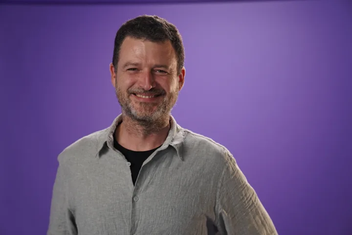